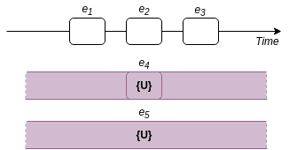
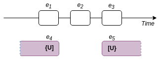

[B]: bounded events. e2 starts after the preceding event e1, and it ends before
the following event 3 starts. There may or may not be a temporal gap between [B] events. A single
[B] event can include several roughly-simulatneous events, and/or span several other [B] events.
[S]: a sequence of bounded consecutive events. A single [S] span is equivalent to defining consecutive
[B]... [B] events in the order in which they are mentioned in the text.
{U}: unbounded events. The start/end positions of e4 are not known, but it overlaps with
e2 event (of [B]/[S] type), and it is probable that it also overlaps with its neighbors
e1 and e3. A single {U} span may contain one or several {U} events with the same
temporal characteristics.

{U} events that apply equally well to any temporal location in the story and are unlikely to change do not
have a temporal location (e.g. John's eyes are blue).
[U}, {U]: partially bounded events. Only the start or the end position ins underspecified.
e4 ends roughly when e1 ends, and 3 and e5 start roughly
simultaneously.

[R), {R]: branching timelines. Both e4 and e1 occur before e2, but
the order of e4 and e1 with respect to each other is underspecified.
You are about to delete this annotation. Would you like to proceed?